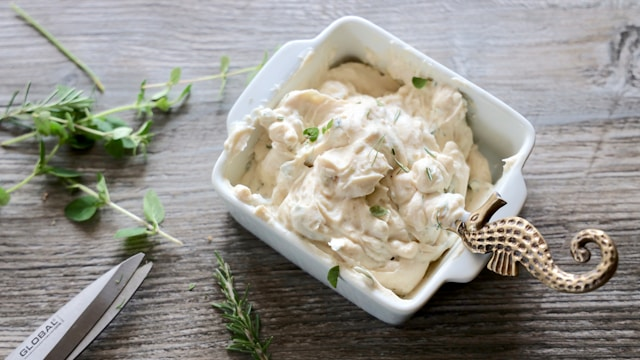
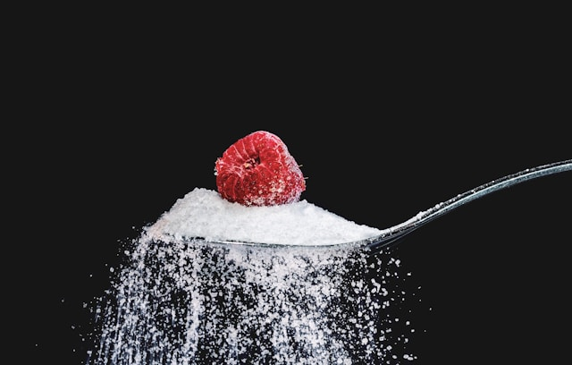
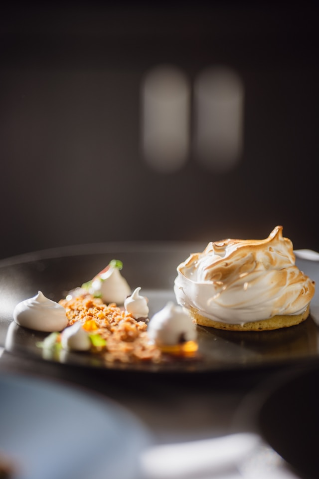
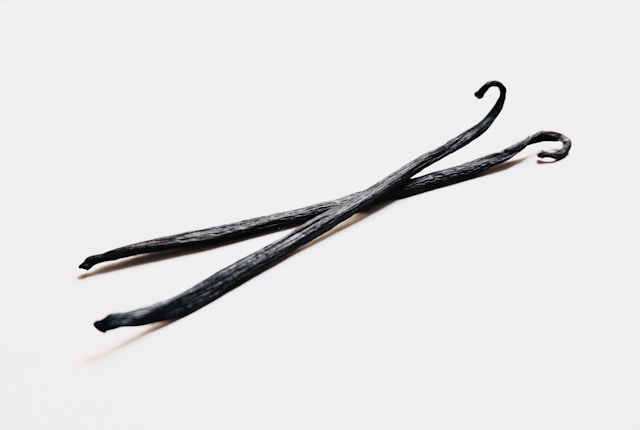

| Malzeme Adı | Malzeme Resmi | Yapılış Adımları |
|---|---|---|
| 200 g krem peynir |  | 200 g krem peyniri ve 150 g şekeri bir kaba alıp çırpın. |
| 150 g şeker |  | Şeker ile karışımı iyice homojen hale getirin. |
| 3 adet yumurta | 3 adet yumurtayı teker teker ekleyip karıştırın. | |
| 200 ml krema |  | 200 ml kremayı ve 1 çay kaşığı vanilya özünü karışıma ekleyin ve karıştırın. |
| 1 çay kaşığı vanilya özü |  | Karışımı yağlanmış kalıba dökün ve önceden ısıtılmış 200°C fırında 50-60 dakika pişirin. |